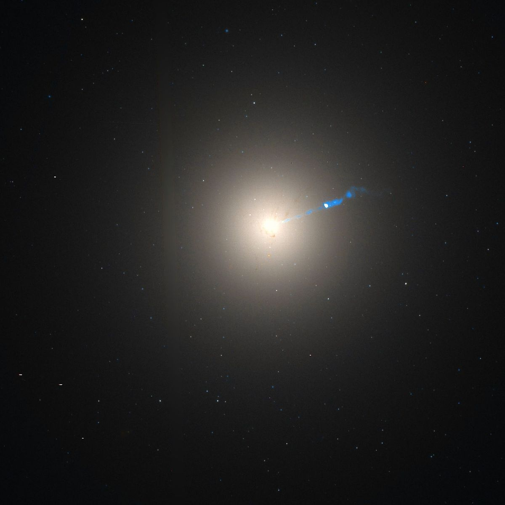
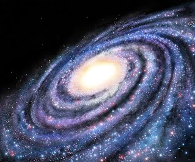
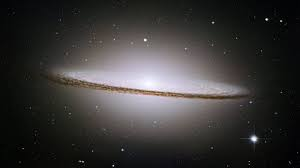
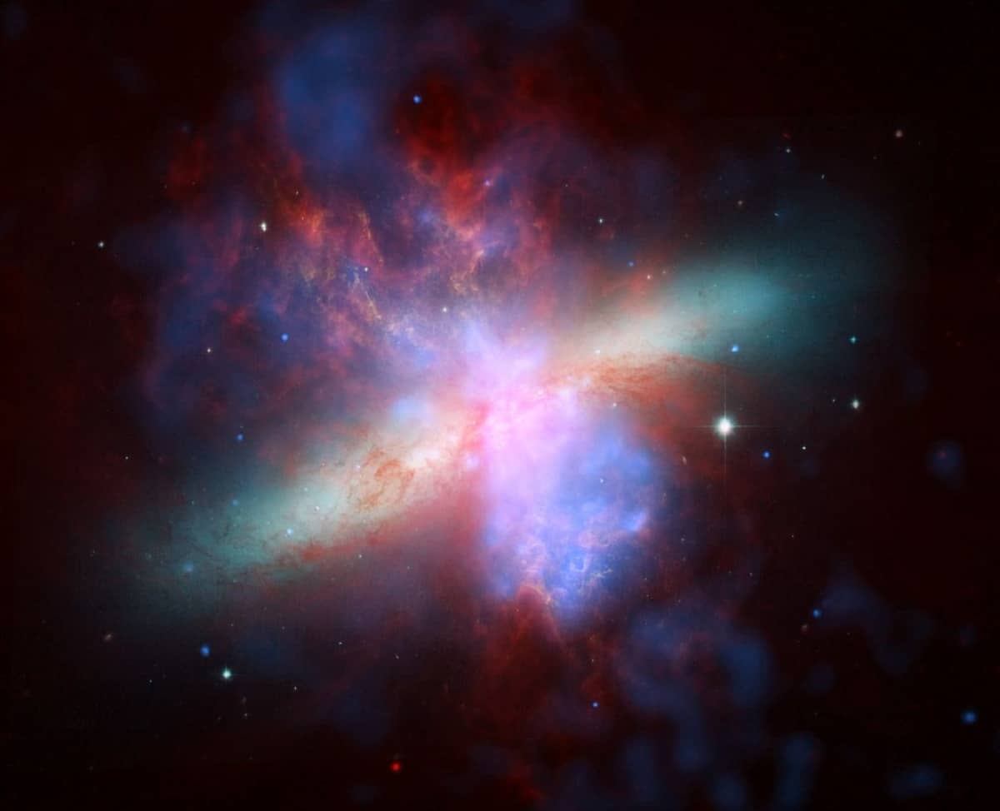
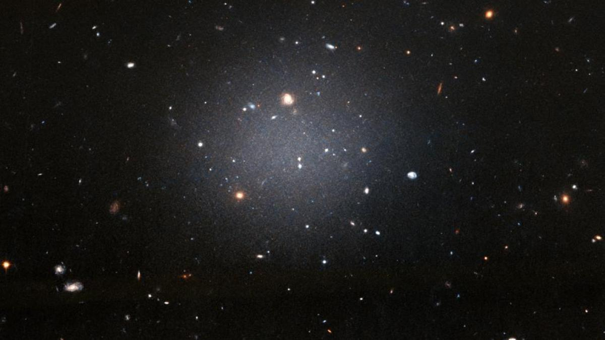
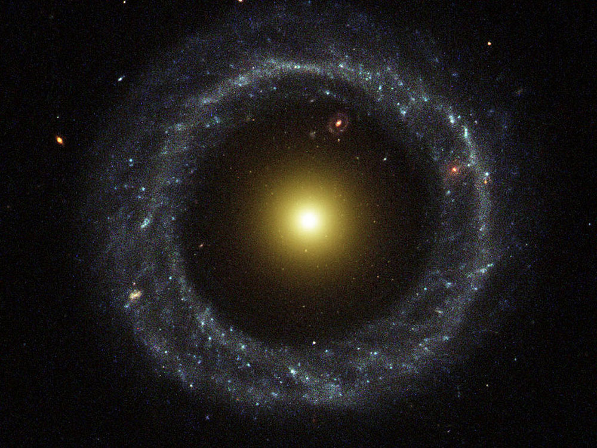

| TIPOS |
IMAGEN |
DESCRIPCIÓN |
| GALAXIAS ELÍPTICAS |
 |
- Las galaxias elípticas tienen una forma esférica alargada, pero no se observa un núcleo claro, es decir, no se ve una protuberancia en el centro de la misma. A pesar de que no se vea un núcleo, como sucede siempre, la galaxia es más brillante en el núcleo que en los bordes, pues es en el centro, debido a la fuerza gravitacional, que se condensan mayor número de estrellas. Se cree que entre el 10% y el 15% de las galaxias son de este tipo.
- Parece ser que las galaxias elípticas no rotan de una forma coordinada, es decir, las estrellas no siguen una órbita determinada, como sí ocurre en las espirales que veremos a continuación. Su brillo es especial ya que la mayoría de estrellas que contienen son gigantes rojas, lo cual demuestra que son galaxias antiguas formadas principalmente por estrellas viejas.
|
| GALAXIAS ESPIRALES |
 |
- Es el tipo de galaxia más frecuente del Universo. De hecho, el 77% de las galaxias descubiertas son espirales. Estas galaxias tienen un disco plano y giratorio que orbita alrededor de un núcleo claro que se percibe como una protuberancia. De este disco emergen una serie de brazos que terminan adoptando una forma espiral.
- Estos brazos giran alrededor del centro de masas de la galaxia a velocidades de cientos de kilómetros por segundo. El brillo característico se debe a que en las zonas más cercanas al centro hay una alta cantidad de estrellas viejas, las cuales adoptan una coloración más rojiza.
|
| GALAXIAS LENTICULARES |
 |
- Una galaxia lenticular es un tipo de galaxia intermedia entre una galaxia elíptica y una galaxia espiral que en la Secuencia de Hubble se clasifica como S0. Las galaxias lenticulares son con forma de disco, (al igual que las galaxias espirales) que han consumido o perdido gran parte de su materia interestelar (como las galaxias elípticas), y por tanto carecen de brazos espirales, aunque a veces existe cierta cantidad de materia interestelar, sobre todo polvo. Constituyen solo el 3 % de las galaxias del universo.
|
| GALAXIAS IRREGULARES |
 |
- Las galaxias irregulares, como su propio nombre indica, no tienen ninguna forma bien definida. Tiene una estructura más bien caótica, pues no están formando una esfera como las elípticas ni disponen de brazos como las espirales. De todos modos, al igual que cualquier galaxia, toda su materia está constantemente orbitando alrededor del centro de masas.
- Normalmente, una galaxia irregular fue en algún momento una galaxia elíptica o espiral que fue deformada por la gravedad de un cuerpo astronómico mayor, por lo general otra galaxia. Esto tiene mucho sentido ya que las irregulares suelen ser también las más pequeñas (tienden a tener masas decenas de veces menores que las de la Vía Láctea), por lo que son más susceptibles de ser afectadas por la fuerza gravitatoria de una galaxia más grande.
|
| GALAXIAS ULTRA DIFUSAS |
 |
- Las galaxias ultra difusas son un tipo de galaxias con una densidad enormemente baja, por lo que son difícilmente apreciables. Son galaxias raras (o quizás el problema es que no hemos sido capaces de descubrir las suficientes) que pueden tener el mismo tamaño que la Vía Láctea pero solo un 1% de las estrellas que esta tiene.
- Según los descubrimientos confirmados en 2018, esta clase de galaxias incluye ambos extremos de contenido de materia oscura: Algunas UDG consisten casi por completo en materia oscura (una galaxia de este tipo puede tener el mismo tamaño y la misma masa que la Vía Láctea, pero un recuento de estrellas visibles de sólo el 1%),mientras que otras UDG parecen estar casi completamente libres de materia oscura
|
| GALAXIAS ANILLOS |
 |
- El subtipo más raro de galaxia pertenece a este tipo y consiste en lo que se conoce como galaxia “anillo”, en la cual se observa una galaxia elíptica tradicional rodeada de un anillo donde también hay estrellas. Solo 1 de cada 1.000 galaxias parece tener esta forma. Se cree que estas galaxias se forman cuando una pequeña galaxia, atraída por una galaxia mayor (generalmente espiral), atraviesa a esta galaxia justo por el núcleo, provocando una distorsión gravitatoria que lleva a la formación de estas estructuras.
|